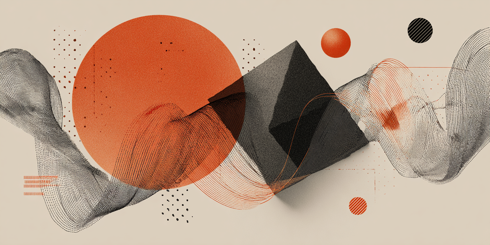
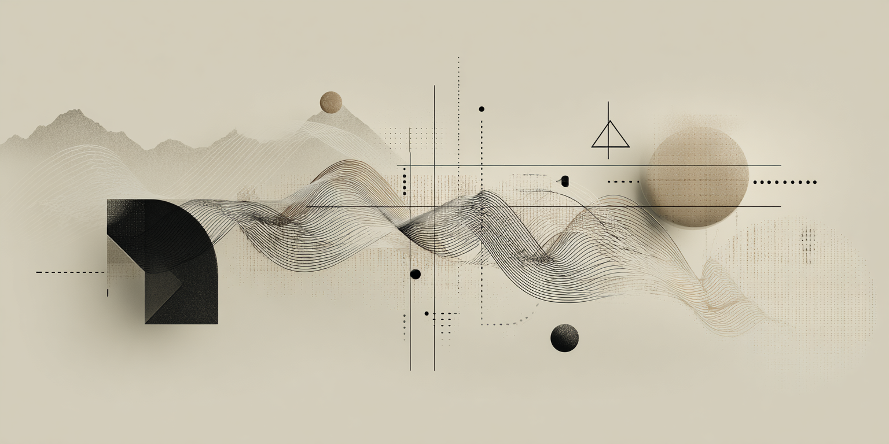
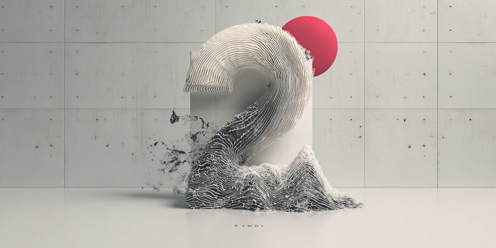

기초소양으로
완성하는 COVA
과정 중심의 사고
개념을 언어화하는 능력
비교와 연결을 통한 탐구
코코의 핵심 교육철학을 바탕으로
중등, 고1/2 미대입시 기초소양 학습 루프를 제공합니다.
PHILOSOPHY
Programs
학생들의 사고력 향상 '기초소양'을 위한 전문 교육 프로그램입니다.
단계별 맞춤 커리큘럼과 과정 중심의 성장을 지원합니다.

시작 프로그램
12주
KICK-OFF
주차별 창의적 질문으로 자아와 환경 탐구의 시작점

사고력 개발
일일 루틴
GRADE-JUNIOR
사고발달 루틴으로 루브릭 피드백 습관 구축
_1757918330190.png)
기초 과정
12개월
GRADE-1
[고1] 비주얼 저널, 입체적 비교, 언어화 훈련을 통해
탐구에서 완성으로 나아가는 단계

심화 과정
12개월
GRADE-2
[고2] 사고와 실기의 균형을 유지하며, 보완과 실전 경험을 통해
탐구를 완성으로 확장 전환 단계
월요일 Kick-Off 루틴
월요일 정규 수업 30분 전: 사고 질문 → 메모 → 드로잉 → 공유/피드백 → 정규 브리지
고1 질문 매트릭스
고2 질문 매트릭스
METRICS·REPORTS
공통 KPI
고2 추가 KPI
학부모 보고 패키지 샘플
[월간 리포트 요약]
- Before/After 2컷
- 성과 3줄
- Kick-Off 포트폴리오 하이라이트 2장
- 다음달 브리지 포인트